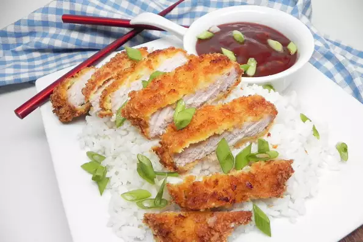

Tonkatsu

Description
Air-fried tonkatsu is crispy on the outside, tender and juicy on the inside. You can buy bottled sauce but this homemade version is simple to make and is far better. Serve over rice if desired.
Ingredients
Tonkatsu Sauce:
- 1/2 cup ketchup
- 2 tablespoons soy sauce
- 1 tablespoon brown sugar
- 1 tablespoon sherry
- 2 teaspoons Worcestershire sauce
- 1 teaspoon minced garlic
Pork:
- 1 pound boneless pork breakfast chops (4 chops)
- salt and ground black pepper to taste
- 2 large eggs
- 1 1/2 cups panko bread crumbs
- nonstick cooking spray